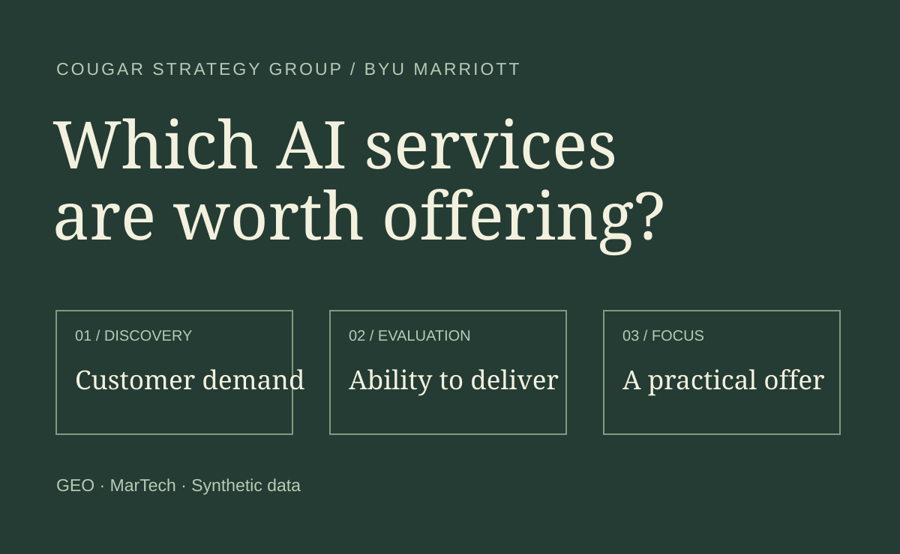
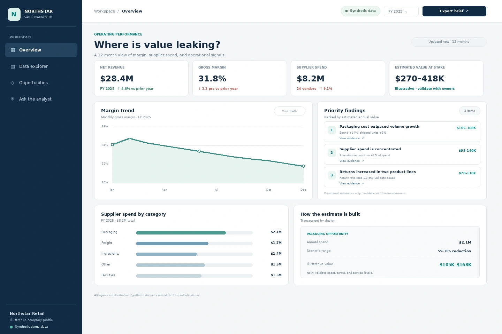

BYU Marriott School of Business
BYU MBA Projects.
Team projects in strategy, consumer research, and technology. Each page describes the project, my role, and the analysis involved.

Cougar Strategy Group · Ongoing
AI services market strategy
Working with a team to assess demand, competition, and what an AI service should actually deliver.
See the project
BYU MBA · Team course project
Lendio marketplace strategy
An analysis of lender and borrower interactions, with a focus on follow-up for unmatched borrowers.
See the project
BYU MBA · Team course project
Chips Ahoy! Chunky
A consumer growth strategy built around research, segmentation, and a clear sales target.
See the project
Personal project · In development
Northstar / AI Consultant Bot
A business analysis concept with financial dashboards, a data explorer, and evidence-based questions.
See the projectOutside the classroom
BYU MBA Consulting Club
I join peers for case interview practice and consulting discussions. It’s a chance to work through unfamiliar problems, explain my thinking, and get feedback.